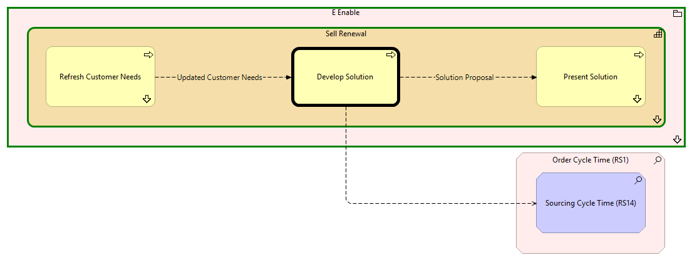

Develop Solution - Context
(
)

generated_by
build_archi_xml.py::gen_proc_node_context_view
generator_path
pedro/capabilities/build_archi_xml_assign/build_archi_xml_assign.py
run_at
2026-10-19T21:03:24
view_type
process_context
E Enable
Sell Renewal
Refresh Customer Needs
Refresh Customer Needs - Context
Develop Solution
Present Solution
Present Solution - Context
Sell Renewal - Processes
E Enable - Processes
Order Cycle Time (RS1)
Sourcing Cycle Time (RS14)
Updated Customer Needs
Refresh Customer Needs
Develop Solution
Solution Proposal
Develop Solution
Present Solution
Develop Solution
Sourcing Cycle Time (RS14)